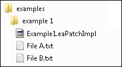
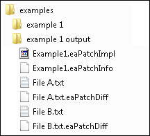

EAPatchMaker is a utility (and linkable library) for generating EAPatch patches. As input it takes a source directory path and a .eaPatchImpl file, and as output it generates an output directory with patch files. Those patch files can be later used by the EAPatchClient on another computer to efficiently recreate the source directory on that computer. Through the .eaPatchImpl file you can specify file filters which cause EAPatchMaker to exclude or include selected files and subdirectories from the source path. There are a number of other options as well, most of which are documented below.
When EAPatchMaker generates a patch, it doesn't merely copy the patch files to a destination directory and call it done. EAPatch is a differential patching system in which the client can smartly download only the files it needs from the server and only portions of those files as needed. The generated patch data has additional information in it which allows this to occur.
See the EAPatchClient documentation for info about how patching works and what its life cycle is.
EAPatchMaker works by you supplying it a starter .eaPatchImpl file (which is XML). It generates a patch from that which includes an expanded .eaPatchImpl file. There are only a few required fields in the .eaPatchImpl file, though you can fill in some of additional fields if they are useful to you. The minimum fields are:
Here we describe a simple example patch.We have the following input directory, and we will be creating a patch out of File A.txt and File B.txt. This example is just two files, but entire directory trees can be included as well.

The .eaPatchImpl file looks like the following. Note that we set the patch to include files of type *.txt. There can be multiple UsedFileArray lines, as well as IgnoredFileArray lines:
<PatchImpl> <PatchInfoURL>Example1.eaPatchInfo</PatchInfoURL> <PatchId>Example1</PatchId> <PatchImplURL L="*_*">Example1.eaPatchImpl</PatchImplURL> <UsedFileArray>*.txt</UsedFileArray> </PatchImpl>
We execute this:
EAPatchMaker.exe -inputDir:"C:\examples\example 1" -outputDir:"C:\examples\example 1 output"
And the following is created:

The created directory can now be hosted on a web server, and an EAPatchCient instance can refer to it. Make sure that the web server directory root is specified in such a way as the PatchImplURL refers to the right location.
It's important that you test your resulting patch, especially if you changed the file filters from the last time you built a patch like this.
This is primarily because mis-implemented file filters can potentially result in deleted files and directories that you didn't intend during patch application. This probably won't be an issue if your filter consists of a simple UsedFileArray that simply names individual files. See the file filters section of this doc for more on this. However, an example of something to beware of is that the *.txt filter given in the simple example above will replace all *.txt files present in the directory to be patched with File A.txt and File B.txt, and if you still want to use *.txt then you need to add an IgnoredFileArray filter to save File C.txt from being deleted during patching.
It turns out that EAPatchMaker can tune the generated patch data in a way that minimizes the required download volume. If you can provide a "previous" directory to go along with your input directory, EAPatchMaker can analyze the two, with the assumption that when most users apply the patch to their data, the data being patched looks like this previous directory. EAPatch maker tunes the generated output to work best (maximize speed/minimize download volume) with the case of patching the previous directory to the input directory.
It's OK if not all users' data to be patched looks like the previous data. And it's OK if only some of the files specified in -previousDir aren't really what's expected. And it's OK if the previous dir isn't complete.
To use this optimization, specif the -previousDir argument to EAPatchMaker, like so:
EAPatchMaker.exe -inputDir:C:\test\Patch1 -outputDir:C:\test\Patch1Output -previousDir:C:\test\Patch1Prev -optimize:enabled
In your .eaPatchImpl file you can specify file filters which define the files that constitute your patch. These are specified by the IgnoredFileArray and UsedFileArray settings.
It is important to understand that the application of a patch causes a directory image to be replaced with a new directory image. This means that files in the old directory image may be deleted because they are not in the new directory image. This is a useful feature, but it can possibly surprise you if you aren't aware of it. You can use the IgnoredFileArray and UsedFileArray settings to control which files are affected, and they are what we describe here.
IgnoredFileArray entries in the .eaPatchImpl file describe files that are ignored while making a patch and applying a patch. They are treated as if they don't exist, both when making a patch and when applying the patch. Thus the ignored file settings constitute a file blacklisting (as opposed to whitelisting). For example:
<IgnoredFileArray flags="CaseFold UnixPath">GameData/Plugins/*</IgnoredFileArray> <IgnoredFileArray flags="CaseFold UnixPath">UserData/*</IgnoredFileArray>
When EAPatchMaker encounters the GameData/Plugins/ and UserData/ folders while building a patch, it ignores them and doesn't read their contents. Upon building the patch, EAPatchClient will leave these directories alone on the patched system. You can use IgnoredFileArray and UsedFileArray (below) together in a .eaPatchImpl file.
UsedFileArray is the opposite of IgnoredFileArray; it specifies a file whitelisting. For example:
entries in the .eaPatchImpl file describe files that are ignored while making a patch and applying a patch. They are treated as if they don't exist, both when making a patch and when applying the patch. For example:
<UsedFileArray flags="CaseFold UnixPath">*.big</UsedFileArray> <UsedFileArray flags="CaseFold UnixPath">Audio/*.snd</UsedFileArray>
The above say that all .big files in the directory tree, including subdirectories, are part of the patch image, as well as all .snd files in the Audio directory. If you want the *.big to refer to only .big files in the base directory and not subdirectories, you would add Pathname to the UsedFileArrayFlags. Alternatively you can use IgnoredFileArray to ignore subdirectories.
The flags use fnmatch syntax, similar to that described at http://linux.die.net/man/3/fnmatch, with the following specifications:
flag Meaning None No flags. The filter spec is taken literally. Pathname Wildcard chars don't can't see past directory separator chars. NoEscape Escape sequences (e.g. '\t') are not recognized.
Escape sequences are only ever recognized with Unix-style paths and not DOS-style paths that use '\' chars. It's as if this flag is always active when DOS paths are in use.Period A leading '.' is matched only explicitly and not by * or ?. PrefixDir Directory path text that precedes the string can match the pattern. CaseFold Act case-insensitively. DosPath Force the path to be interpreted as a DOS path (e.g. '\') instead of native path. If you use this then you would make the file array paths use \ UnixPath Force the path to be interpreted as a Unix path (e.g. '/') instead of native path. If you use this then you would make the file array paths use /
We use UnixPath in most cases below because that's what you usually want to use, as it makes your file filters more portable. You could alternatively use DosPath and always use \ chars in your filters and have the same portable effect (i.e. your filters would work on Unix-like systems).
Pattern File path Flags Match Result
--------------------------------------------------------------------------------------
"", "blah.txt", 0, false
"blah.txt" "blah.txt" 0 true
"*.big" "/abc/file.big" UnixPath true
"*.big" "/abc/file.big" UnixPath Pathname false "a/b/c" "a/b/c" UnixPath true
"a/b/c" "a/b/c" UnixPath Pathname true
"a/b/c" "a/_/c" UnixPath false
"a/b/c" "A/B/C" UnixPath false
"a/b/c" "A/B/C" UnixPath CaseFold true
"a/b/?" "a/b/c" UnixPath true
"a/b/?" "a/b/" UnixPath false
"*" "a/b/c" UnixPath true
"**" "a/b/c" UnixPath true
"???" "ab" 0 false
"???" "abc" 0 true
"a/b/c/*.?[ab]" "a/b/c/d.qa" UnixPath true
"a/b/c/*.?[ab]" "a/b/c/d.qq" UnixPath false
"a/*/*/d" "a/bbbb/c/d" UnixPath true
"a/*/*/d" "a/bbbb/c/d" UnixPath Pathname true
"/abc/def.txt" "/abc/def.txt" UnixPath true
"/abc/def.txt" "/abc/Xef.txt" UnixPath false
What happens if you use both IgnoredFileArray and UsedFileArray in a .eaPatchImpl file? The short answer is that UsedFileArray takes precedence, but here's a "truth table" which presents all combinations of matching a file path against an Ignored and Used file spec:
Ignored unspecified Ignored match Ignored unmatched Used unspecified Used match Used unmatched
In the table above, Match means that the file is part of the patch. For example:
Format Required? Description -help / -h / -? Displays this usage information -v:<value> / -verbosity:<value> Default is 1. 0 = error output only, 1 = low output, 2 = full output. -wait / -w Waits for user confirmation before app exit. -inputDir:<dir path> Required Sets the directory the patch is made from. -outputDir:<dir path> Required Sets the directory the patch is written to. -previousDir:<dir path> Possibly Optional; required if -optimize is used. Specifies a directory with typical pre-patch contents. -patchImplPath:<.eaPatchImpl path> Possibly Optional; required if the .eaPatchImpl file isn't in the root of the inputDir. Specifies the patch definition. validatePatchImpl:enabled|disabled Optional. Default is disabled. When enabled, the user is required to supply a valid .eaPatchImpl file. -clearOutputDir:enabled|disabled Optional. Default is enabled. When enabled, any contents of the output directory are deleted. -errorCleanup:enabled|disabled Optional. Default is enabled. When enabled, upon an error the output directory and any contents are deleted. -optimize:enabled|disabled Optional. Default is enabled, which may be slow. If you specify this then you must specify -previousDir. -maxFileCount:<count> Optional. Default value is 100000. Used for sanity checking.
EAPatchMaker -inputDir:C:\NewData -outputDir:C:\Patch01 -patchImplPath:C:\Patch01.eaPatchImpl
EAPatchMaker -inputDir:C:\GameApp\NewData -outputDir:C:\GameApp\Patch01 -maxFileCount:2000000 -w
EAPatchMaker -previousDir:C:\PrevData -inputDir:C:\NewData -outputDir:C:\PatchData -optimize:enabled
<PatchImpl>
<!-- Type: String, required -->
<!-- URL to the .eaPatchInfo file associated with this PatchInfo.
This doesn't need to be filled in by the person who creates this patch.
It's filled in at runtime from the actual URL location the file came from.
This URL can also be server-relative and thus not have the http://<server>:<port>
portion present, as it will be assumed to be the default patch server set
at runtime by the application. If the URL doesn't begin with http[s]:// then
it is assuemed to be relative. You can't just use (e.g.) patch.ea.com/Madden_2014/TeamUpdates/en_us/Patch.eaPatchImpl
Paths are expected to be in a form compatible with paths used as HTML links,
which means, for example, that special characters need to be escaped, etc.
Example:
<PatchInfoURL>http://patch.ea.com/Madden_2014/TeamUpdates/Patch1.eaPatchInfo</PatchInfoURL>
Example (server-relative):
<PatchInfoURL>Madden_2014/TeamUpdates/Patch1.eaPatchInfo</PatchInfoURL>
-->
<PatchInfoURL></PatchInfoURL>
<!-- Type: String, required -->
<!-- Unique string, like a GUID. This is not meant to be read by users; mPatchName is
the user-readable name of the patch. The format of the id is application-specific.
Example:
<PatchId>1234-3e21-4352-3893</PatchId>
-->
<PatchId></PatchId>
<!-- Type: String, optional -->
<!-- Indicates whether the patch is a fix, add-on, etc. Case-insensitive.
The valid string options are application-specific, but the term "patch" is
reserved to mean non-optional content. Other strings like "plug-in" are possible.
Example:
<PatchClass>patch</PatchClass>
-->
<PatchClass></PatchClass>
<!-- Type: bool, optional -->
<!-- True if the patch is required in order to further run the application.
Example:
<Required>true</Required>
-->
<Required></Required>
<!-- Type: LocalizedString, required -->
<!-- URL for the patch implementation itself. May get redirected by the server.
This URL can also be server-relative and thus not have the http://<server>:<port>
portion present, as it will be assumed to be the default patch server set
at runtime by the application. If the URL doesn't begin with http[s]:// then
it is assuemed to be relative. You can't just use (e.g.) patch.ea.com/Madden_2014/TeamUpdates/en_us/Patch.eaPatchImpl
Paths are expected to be in a form compatible with paths used as HTML links,
which means, for example, that special characters need to be escaped, etc.
Example (demonstrates a patch that works for all locales):
<PatchImplURL L="*_*">http://patch.ea.com/Madden_2014/TeamUpdates/Patch.eaPatchImpl</PatchImplURL>
Example (server-relative):
<PatchImplURL L="*_*">Madden_2014/TeamUpdates/Patch.eaPatchImpl</PatchImplURL>
Example:
<PatchImplURL L="en_us">http://patch.ea.com/Madden_2014/TeamUpdates/en_us/Patch.eaPatchImpl</PatchImplURL>
<PatchImplURL L="de_de">http://patch.ea.com/Madden_2014/TeamUpdates/de_de/Patch.eaPatchImpl</PatchImplURL>
Example (demonstrates a patch that works for any language used in the country of germany):
<PatchImplURL L="*_de">http://patch.ea.com/Madden_2014/TeamUpdates/de/Patch.eaPatchImpl</PatchImplURL>
-->
<PatchImplURL L="en_us"></PatchImplURL>
<!-- Type: StringArray, optional -->
<!-- Entitlement ids, defined by the people who tie SKUs and users to downloadable entitlements. -->
<!-- Identifies the patch for the purpose of entitlements (rights to use it).
The format of this is application dependent and can be any kind of string
the application may find useful for matching patches.
Example (showing two ContentIds this patch is valid for):
<ContentIdArray>12345</ContentIdArray>
<ContentIdArray>67890</ContentIdArray>
-->
<ContentIdArray></ContentIdArray>
<!-- Type: StringArray, optional -->
<!-- List of SKUs which this patch is valid for.
The format of this is application dependent and can be any kind of string the
application may find useful for matching patches.
Example (showing two SKUs this patch is valid for):
<SKUIdArray>12345</SKUIdArray>
<SKUIdArray>abcde</SKUIdArray>
-->
<SKUIdArray></SKUIdArray>
<!-- Type: LocalizedString, optional -->
<!-- Human readable brief patch name (title). Must be localized Unicode text only, and not HTML, RTF, DOC, etc.
Example:
<LocalizedString L="en_us">Team Updates</LocalizedString>
<LocalizedString L="de_de">Team Aktuelles</LocalizedString>
-->
<PatchName L="en_us"></PatchName>
<!-- Type: LocalizedString, optional -->
<!-- Human readable patch description. May be Unicode text, HTML (beginning with <!DOCTYPE html ..>),
or may be a URL to an HTML page (beginning with "http" or "https"). Your app should have an
embedded HTML display (e.g. EAWebKit) in order to display this HTML content.
The format of the URL doesn't matter to the patching app.
Example:
<PatchDescription L="en_us">Team Updates (can be a paragraph of text)</PatchDescription>
<PatchDescription L="de_de">Team Aktuelles (can be a paragraph of text)</PatchDescription>
Example:
<PatchDescription L="en_us"><!DOCTYPE html><HTML> Team Updates... </HTML></PatchDescription>
<PatchDescription L="de_de"><!DOCTYPE html><HTML> Team Aktuelles... </HTML></PatchDescription>
Example:
<PatchDescription L="en_us">http://patch.ea.com/Madden_2014/TeamUpdates/en_us/PatchDescription.html</PatchDescription>
<PatchDescription L="de_de">http://patch.ea.com/Madden_2014/TeamUpdates/de_de/PatchDescription.html</PatchDescription>
-->
<PatchDescription L="en_us"></PatchDescription>
<!-- Type: LocalizedString, optional-->
<!-- Optional EULA (End User License Agreement) that the user of the patch must agree
to before installing the patch.
Example:
<PatchEULA L="en_us">You agree to the terms of this software...</PatchEULA>
-->
<PatchEULA L="en_us"></PatchEULA>
<!-- Type: String, optional -->
<!-- Name of application which this patch applies to. The client app may wish to
test against this to validate that the patch belongs to it. This is not a
localized string, as it's not meant to be shown to users.
Example:
<AppId>Madden Football 2014</AppId>
-->
<AppId></AppId>
<!-- Type: StringArray, optional -->
<!-- OSs which this patch applies to.
Options include "*" "Win32" "Win64" "XBox 360" "PS3" "Wii" "WiiU" plus future platform names.
Example (demonstrates that both Win32 and Win64 are supported):
<OSNameArray>Win32</OSNameArray>
<OSNameArray>Win64</OSNameArray>
-->
<OSIdArray>*</OSIdArray>
<!-- Type: StringArray, optional -->
<!-- Minimum OS versions needed to be able to download and use the patch.
Synchronized with mOSIdArray.
-->
<MinOSVersionArray></MinOSVersionArray>
<!-- Type: String, optional -->
<!-- Date in an ISO 8601 format: "yyyy-MM-dd hh:mm:ss GMT", such as
"1994-11-06 08:49:37 GMT" for November 6, 1994.
Example:
<ReleaseDate>2014-6-28 08:49:00 GMT</ReleaseDate>
-->
<ReleaseDate></ReleaseDate>
<!-- Type: LocalizedString, optional -->
<!-- List of supported locales. GetString returns NULL if the locale isn't
supported returns a non-NULL empty string if supported.
Example demonstrating that this patch supports the following two languages:
<LocaleSupport L="en_us">(any text here is currently ignored)</LocaleSupport>
<LocaleSupport L="de_de"></LocaleSupport>
-->
<LocaleSupport L="*_*"></LocaleSupport>
<!-- Type: StringArray, optional -->
<!-- List of patches which this patch supercedes, and thus aren't necessary
if you install this patch. This section may be absent if there are no
patches this patches supercedes.
Example:
<SupercedentPatchIdArray>5556-3e21-4352-4321</SupercedentPatchIdArray>
-->
<SupercedentPatchIdArray></SupercedentPatchIdArray>
<!-- Type: StringArray, optional -->
<!-- List of patches (PatchIds) which supercede this patch. This section
may be absent if there are no superceding patches.
Example:
<SupercedingPatchIdArray>1234-3e21-4352-3893</SupercedingPatchIdArray>
<SupercedingPatchIdArray>2345-3893-1234-2654</SupercedingPatchIdArray>
-->
<SupercedingPatchIdArray></SupercedingPatchIdArray>
<!-- Type: StringArray, optional -->
<!-- List of patches which this patch depends on being installed before
this one can be installed. This section may be absent if there are no dependent patches.
Example:
<DependentPatchIdArray>2222-1212-5454-6868</DependentPatchIdArray>
<DependentPatchIdArray>3333-1212-5454-5656</DependentPatchIdArray>
-->
<DependentPatchIdArray></DependentPatchIdArray>
<!-- Type: String, optional -->
<!-- Where the patch goes. The format of this string is platform and
possibly application-specific. You can use either kind of directory
separator (/ or \) and it will be converted to the platform type
at runtime. Normally this is a relative path, and thus doesn't begin
with a leading '/' char (as that would refer to a full path). Be relative
we mean relative to the base runtime data directory specified by the app.
This can also be empty, which indicates that the patch occurs in the
base data directory.
Example:
<PatchBaseDirectory>GameData/Updates/</PatchBaseDirectory>
Example:
<PatchBaseDirectory></PatchBaseDirectory>
-->
<PatchBaseDirectory></PatchBaseDirectory>
<!-- Type: String, optional -->
<!-- Optional arbitrary information the user might want to associate with the patch.
Example:
<UserInfo>Four score and seven years ago today...</UserInfo>
Example:
<UserInfo></UserInfo>
-->
<UserInfo></UserInfo>
<!-- Type: String, optional -->
<!-- Optional checksum/hash the user might want to associate with the patch. May have a
different meaning than any kind of hash we use elsewhere within this library.
Example:
<UserChecksum>3e4a286d929216da</UserChecksum>
Example:
<UserChecksum>235,334,991,14,225</UserChecksum>
Example:
<UserChecksum></UserChecksum>
-->
<UserInfo></UserInfo>
<!-- Type: uint64_t: 64 bit non-negative integer, without commas, decimal or hex (beginning with 0x), optional -->
<!-- The sum of the file sizes that an installed version of this patch uses.
Doesn't include ignored directories includes just the files in the patch.
This value is filled in by the Patch Maker.
Example:
<FinalFileSizeUsage>34895342</FinalFileSizeUsage>
-->
<FinalFileSizeUsage></FinalFileSizeUsage>
<!-- Type: uint64_t: 64 bit non-negative integer, without commas, decimal or hex (beginning with 0x), optional -->
<!-- The amount of disk space an installed version of this patch uses.
Doesn't include ignored directories includes just the files in the patch.
This is usually a value a little greater than the sum of the file sizes,
due to things like file system sector sizes. This value is filled in by
the Patch Maker, though it can be overridden by a user edit afterwards.
Example:
<FinalDiskSpaceUsage>28489024</FinalDiskSpaceUsage>
-->
<FinalDiskSpaceUsage></FinalDiskSpaceUsage>
<!-- Type: uint64_t: 64 bit non-negative integer, without commas, decimal or hex (beginning with 0x), optional -->
<!-- The max amount of disk space the patch requires to have as part of its
download and install. This is > mFinalDiskSpaceUsage, as in the simplest
case it could need a full patch image plus intermediate files created
by the build process. This value is filled in by the Patch Maker, though it
can be overridden by a user edit afterwards.
Example:
<IntermediateDiskSpaceUsage>3728489025</IntermediateDiskSpaceUsage>
-->
<IntermediateDiskSpaceUsage></IntermediateDiskSpaceUsage>
<!-- Type: String, optional
Script to run before installing the patch. May be a URL to a Lua script
instead of a script itself. See the EAPatch documentation for what the
Lua script can do.
This field may be omitted.
-->
<PreRunScript></PreRunScript>
<!-- Type: String, optional
Script to run after installing the patch. May be a URL to a Lua script
instead of a script itself. See the EAPatch documentation for what the
Lua script can do.
This field may be omitted.
-->
<PostRunScript></PostRunScript>
<!-- Type: FileFilterArray, required (need to specify at least one of IgnoredFileArray and UsedFileArray)
Array of files to ignore, specified by wild-card-like filters. The files may be in subdirectories or in the root.
Subdirectories can be specified with wildcards as per the FnMatch function:
http://linux.die.net/man/3/fnmatch. Options include:
Pathname - Wildcard don't can't see past directory separator chars.
NoEscape - Escape sequences (e.g. '\t') are not recognized. Escape sequences are only ever recognized with Unix-style paths and not DOS-style paths that use '\' chars. It's as if this flag is always active when DOS paths are in use.
Period - A leading '.' is matched only explicitly and not by * or ?.
LeadingDir - Match a leading directory and allow ignoring after it.
PrefixDir - Directory path text that precedes the string can match the pattern.
CaseFold - Act case-insensitively.
DosPath - Force the path to be interpreted as a DOS path (e.g. '\') instead of native path.
UnixPath - Force the path to be interpreted as a Unix path (e.g. '/') instead of native path.
The flags field may be empty, but must be present.
See the example below for the syntax of the flags and path specification.
This field may be omitted.
FnMatch example behavior:
Pattern String Flags Result
_________________________________________________________________________________
"" "" 0 true
"blah.txt", "", 0, false
"*", "", 0, true
"", "blah.txt", 0, false
"blah.txt" "blah.txt" 0 true
"a/b/c" "a/b/c" kFNMUnixPath true
"a/b/c" "a/b/c" kFNMUnixPath | kFNMPathname true
"a\\b\\c" "a\\b\\c" kFNMDosPath true
"a\\b\\c" "a\\b\\c" kFNMDosPath | kFNMPathname true
"a/b/c" "a/_/c" kFNMUnixPath false
"a/b/c" "A/B/C" kFNMUnixPath false
"a/b/c" "A/B/C" kFNMUnixPath | kFNMCaseFold true
"a/b/?" "a/b/c" kFNMUnixPath true
"a/b/?" "a/b/" kFNMUnixPath false
"a\\b\\?" "a\\b\\" kFNMDosPath false
"*" "a/b/c" kFNMUnixPath true
"*" "a\\b\\c" kFNMDosPath true
"**" "a/b/c" kFNMUnixPath true
"**" "a\\b\\c" kFNMDosPath true
"???" "ab" 0 false
"???" "abc" 0 true
"a/b/c/*.?[ab]" "a/b/c/d.qa" kFNMUnixPath true
"a\\b\\c\\*.?[ab]" "a\\b\\c\\d.qa" kFNMDosPath true
"a/b/c/*.?[ab]" "a/b/c/d.qq" kFNMUnixPath false
"a\\b\\c\\*.?[ab]" "a\\b\\c\\d.qq" kFNMDosPath false
"a/*/*/d" "a/bbbb/c/d" kFNMUnixPath true
"a\\*\\*\\d" "a\\bbbb\\c\\d" kFNMDosPath true
"a/*/*/d" "a/bbbb/c/d" kFNMUnixPath | kFNMPathname true
"a\\*\\*\\d" "a\\bbbb\\c\\d" kFNMDosPath | kFNMPathname true
"/abc/def.txt" "/abc/def.txt" kFNMUnixPath true
"C:\\abc\\def.txt" "C:\\abc\\def.txt" kFNMDosPath true
"/abc/def.txt" "/abc/Xef.txt" kFNMUnixPath false
"C:\\abc\\def.txt" "C:\\abc\\Xef.txt" kFNMDosPath false
Example usage:
<IgnoredFileArray flags="CaseFold UnixPath">GameData/AddOnData/*</IgnoredFileArray>
<IgnoredFileArray flags="CaseFold UnixPath">GameData/Language.dat/</IgnoredFileArray>
<IgnoredFileArray flags="CaseFold UnixPath">GameData/Locale*.dat</IgnoredFileArray>
-->
<IgnoredFileArray></IgnoredFileArray>
<!-- Type: FileFilterArray, required (need to specify at least one of IgnoredFileArray and UsedFileArray)
This is similar to IgnoredFileArray except it defines a whitelist instead of a blacklist.
If you want to have a patch which is just one or more files, you can just list them here. -->
<UsedFileArray></UsedFileArray>
</PatchImpl>
EAPatchDir (.eaPatchDir) files are files that describe an available set of patches. An EAPatchDir file is simply a text file listing URLs for EAPatchInfo (.eaPatchInfo) files. Thus an EAPatchDir file is much like a restaurant menu which lists the available dishes. Note that a .eaPatchInfo file is a small XML file which describes the patch briefly, enough to present a user interface to an application user. The actual patch implementation is described in the .eaPatchImpl file.
EAPatchMaker doesn't generate .eaPatchDir files. They are optional and could be needed only if you want to present a menu of patches to a user to select from. The format of the file is described via an example of the file:
# Example.eaPatchDir # # This is a text file which simply lists URLs for available patches. # Lines beginning with # are ignored, as are empty lines. # The application may examine the list of patches and further reduce the # set of available patches based on information within the patch info file. # In the example below, there is a separate directory for each .eapatchInfo # file, but all .eaPatchInfo files could be in the same directory. However, # the patch implementations themselves (.eaPatchImpl, etc.) still would # need to be in separate directories. The names of the .eaPatchInfo files # are arbitrary and don't have to be the same as the directory they are # in, though it's easiest to understand if that's so and the .eaPatchImpl # files are also named the same. # # Both absolute and relative URLs are supported. In the case of relative URLs # the system assumes that the http://<server>/ part is just the same as whatever # server the .eaPatchDir came from. # # Paths are expected to be in a form compatible with paths used as HTML links, # which means, for example, that special characters need to be escaped, etc. http://patch.ea.com:1234/Basebrawl_2014/Patch1/Patch1.eaPatchInfo http://patch.ea.com:1234/Basebrawl_2014/Patch2/Patch2.eaPatchInfo http://patch.ea.com:1234/Basebrawl_2014/Patch3/Patch3.eaPatchInfo http://patch.ea.com:1234/Basebrawl_2014/Patch4/Patch4.eaPatchInfo Basebrawl_2014/Patch5/Patch5.eaPatchInfo Basebrawl_2014/Patch6/Patch6.eaPatchInf